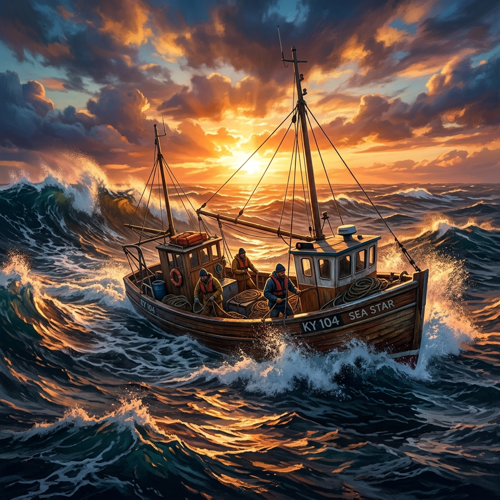
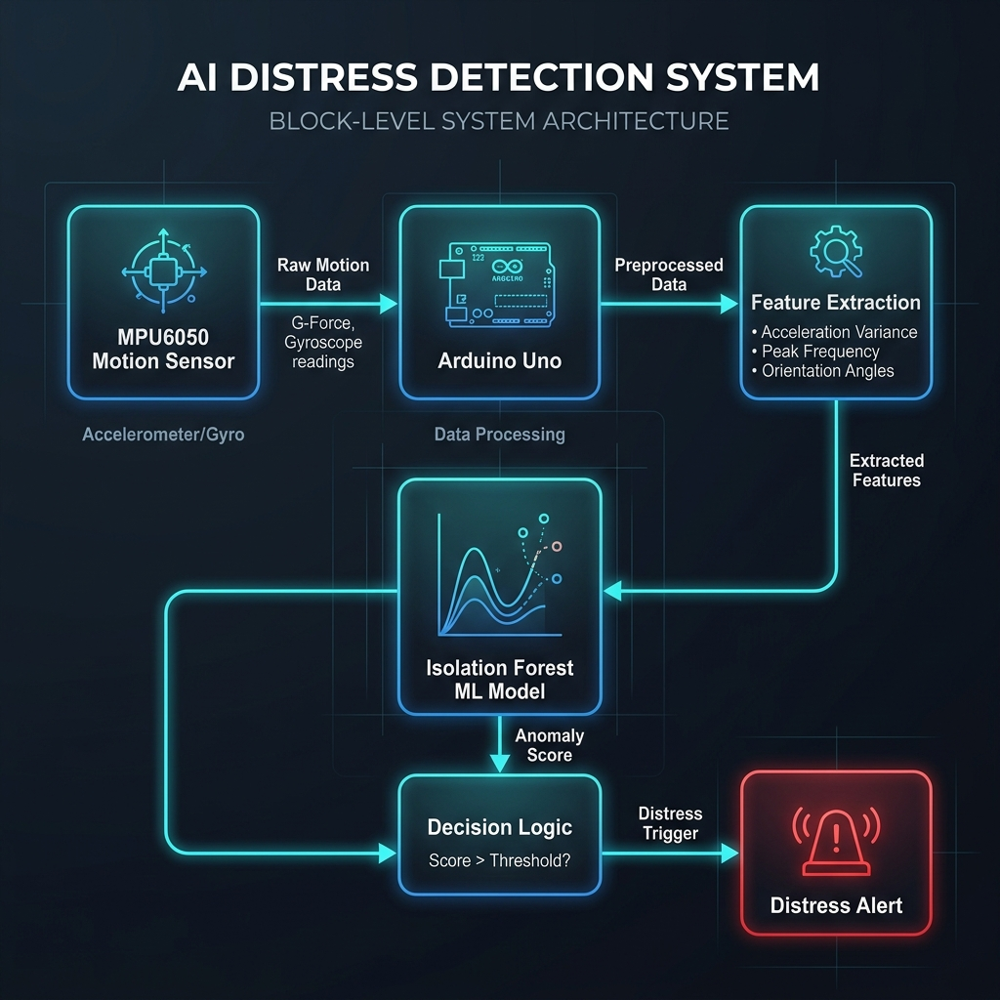
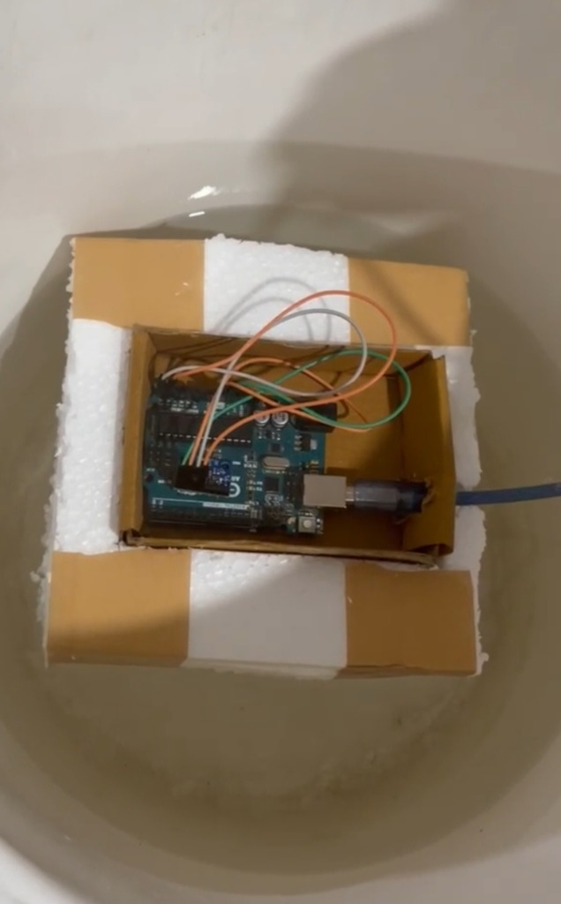
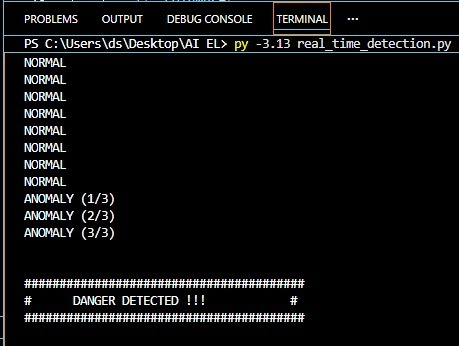

Every day, thousands of fishermen and local boat operators travel across rivers, lakes, and coastal waters without access to advanced safety systems because existing maritime technologies are too expensive. AquaSentinel changes this by providing an intelligent, low-cost distress detection system powered by AI and motion sensors.

"Every fisherman deserves access to intelligent safety technology, not just those who can afford expensive maritime systems."
Small-scale fishing communities form the backbone of coastal and rural water transport in developing countries. Yet, they are constantly exposed to unpredictable currents, storms, and capsizing risks. Commercial systems cost a fortune. AquaSentinel bridges this massive technology gap by packaging AI-driven motion analysis into an accessible, pocket-friendly device.
Traditional maritime search and rescue models are designed for massive container ships and yachts, leaving local operators completely in the dark.
Commercial safety systems (AIS, EPIRBs, radar) cost tens of thousands of rupees, making them completely unaffordable for low-income local fishermen.
Standard marine tech is physically bulky and consumes massive amounts of power, rendering it impractical for installation on small, open wooden boats.
During a capsize, flooding, or sudden collision, crew members are often incapacitated and cannot make manual radio calls or trigger distress flares.
Without automated alerts, rescue teams only discover accidents hours or days later, drastically decreasing the survival rate of stranded fishermen.
Rural and coastal watercraft transport networks are vital lifelines. They deserve access to life-saving technology that respects their economic reality. Safety must not be a luxury determined by vessel size.
Specifically budgeted to allow any boat owner to safeguard their lives without financial strain.
Replaces expensive gyro-stabilizers with an ultra-affordable MPU6050 accelerometer and gyroscope.
Runs machine learning classifiers in real-time to distinguish between rough waves and actual capsizing or flooding patterns.
Architected to allow easy integration of GPS localization and GSM/LoRa communication modules for rural networks.
AquaSentinel acts as a silent observer. Securely mounted to the deck, it evaluates every wave, roll, and pitch. In the event of a critical emergency, it takes immediate action when the crew cannot.
A robust, lightweight data pipeline designed to operate reliably in harsh aquatic environments.
Continuously records raw 3-axis accelerometer and gyroscope data reflecting the boat's roll, pitch, and yaw dynamics.
Collects, filters, and packages the raw sensor signals, acting as the low-power hardware terminal.
Extracts essential mathematical features from sliding window intervals of rolling motion variables.
An unsupervised machine learning model that analyzes spatial coordinates and flags motion outliers (anomalies).
Triggers only after 3 consecutive anomalies are identified, minimizing false alerts from normal high-wave impacts.
Instantly activates on-board danger alerts, notifying emergency services or neighboring craft.
Planned expansion to transmit precise live coordinate notifications via SMS / cellular network infrastructure.
| Feature | AquaSentinel | Traditional Systems |
|---|---|---|
| Affordability | Extremely Low Cost | High Cost (Prohibitive) |
| Detection | AI-Based Anomaly Model | Purely Manual Trigger |
| Weight | Lightweight & Compact | Heavy / Commercial scale |
| Maintenance | Low Maintenance | Expensive Upkeep |
| Installation | Easy (Plug & Play) | Professional Setup Required |
| Community | Designed for Developing Areas | Commercial Ship Focus |
Built with budget-friendly components ensuring mass accessibility.
Unsupervised Machine learning profiles specific hull movements.
Zero lag between critical capsizing motion and threat flagging.
Intelligent threshold checks prevent triggers from normal sea waves.
Bypasses automated AI checks for immediate manual alerts.
Ready to log regional latitude and longitude parameters.
Engineered to route distress signals directly to mobile phone towers.
Weighs less than 200g, retaining boat stability and center of gravity.
Minimal configuration allows instant installation in minutes.
A real, functioning distress detection framework built, tested, and validated in active water environments.

The signal routing blueprint: from motion tracking (MPU6050) to the Machine Learning decision pipeline.

Our floating model showing the Arduino Uno and MPU6050 motion logger during active buoyancy trials.

Console output displaying the Isolation Forest model detecting a sequence of anomalies and flagging danger.
Coordinates high-frequency analog signals from sensor boards.
Hardware ControllerMicro-Electro-Mechanical Systems (MEMS) accelerometer and gyroscope.
Inertial SensorHosts the backend modeling, serial communications, and alarm logic.
Development CorePowers the unsupervised anomaly detection models (Isolation Forest).
ML FrameworkCalculates data point isolation pathways to distinguish waves from capsizes.
Model ArchitectureHandles structured data parsing, windowing, and data manipulation.
Data EngineManages hardware communication link between Arduino and PC terminals.
Communication LinkHow we plan to transition AquaSentinel from a prototype to a global open-source safety standard.
Porting the Python AI processing algorithms directly onto a low-power ESP32 microcontroller with built-in Wi-Fi and Bluetooth.
Integrating compact, low-cost GPS chips (like NEO-6M) to enable automated real-time latitude/longitude packet logging.
Wiring SIM800L modules to instantly route automated SOS coordinates to coastguard services or families via SMS.
A companion application allowing families to monitor the safety status and location track their boat fleets.
An administrative web portal for regional authorities to visualize real-time boat telemetry and trigger rescue operations.
Equipping the hull-mounted housing with micro solar panels, rendering the system self-sustaining and off-grid.
Creating regional mesh networks using LoRa technology, enabling fishing fleets to form a collaborative rescue network where boats automatically relay emergency location data between each other in zones with no cell coverage.
Department of Computer Science and Engineering
R V College of Engineering, Bengaluru, India
"Tarani symbolizes a boat that safely carries people across water. Our team believes that technology should empower communities by making life-saving innovations affordable and accessible to everyone."